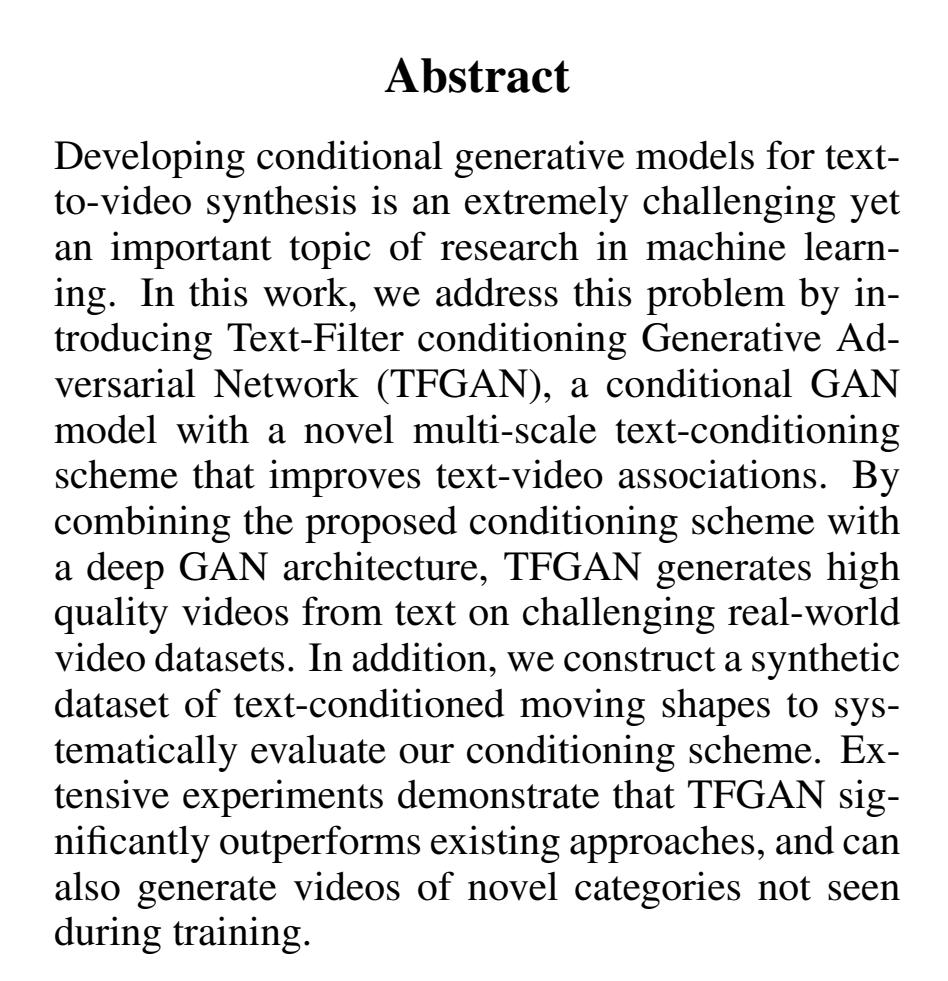

| Capture | Trans |
|---|---|
|

|
Abstract 抽象的 Developing conditional generative models for textto-video synthesis is an extremely challenging yet an important topic of research in machine learning. 开发用于文本到视频合成的条件生成模型是一个极具挑战性但也是机器学习研究的重要课题。 In this work, we address this problem by introducing Text-Filter conditioning Generative Adversarial Network (TFGAN), a conditional GAN model with a novel multi-scale text-conditioning scheme that improves text-video associations. 在这项工作中，我们通过引入文本过滤器调节生成对抗网络 (TFGAN) 来解决这个问题，TFGAN 是一种条件 GAN 模型，具有新颖的多尺度文本调节方案，可改善文本-视频关联。 By combining the proposed conditioning scheme with a deep GAN architecture, TFGAN generates high quality videos from text on challenging real-world video datasets. 通过将所提出的调节方案与深度 GAN 架构相结合，TFGAN 从具有挑战性的真实世界视频数据集上的文本生成高质量视频。 In addition, we construct a synthetic dataset of text-conditioned moving shapes to systematically evaluate our conditioning scheme. 此外，我们构建了一个文本条件移动形状的综合数据集，以系统地评估我们的条件方案。 Extensive experiments demonstrate that TFGAN significantly outperforms existing approaches, and can also generate videos of novel categories not seen during training. 大量实验表明，TFGAN 明显优于现有方法，并且还可以生成训练期间未见过的新类别视频。 |
|
|
1 Introduction 1 简介 Generative models have gained much interest in the research community over the last few years for unsupervised representation learning. 在过去几年中，生成模型在无监督表示学习方面引起了研究界的极大兴趣。 Generative Adversarial Networks (GANs) [Goodfellow et al., 2014] have been one of the most successful generative models till date. 生成对抗网络 (GAN) [Goodfellow 等人，2014 年] 是迄今为止最成功的生成模型之一。 Following its introduction in 2014, significant progress has been made towards improving the stability, quality and the diversity of the generated images [Salimans er al., 2016][Karras et al., 2017]. 自 2014 年推出以来，在提高生成图像的稳定性、质量和多样性方面取得了重大进展 [Salimans 等人，2016 年][Karras 等人，2017 年]。 While GANs have been successful in the image domain, recent efforts have extended it to other modalities such as text [Wang et al., 2018a], graphs [Wang et al., 2018b], etc. 虽然 GAN 在图像领域取得了成功，但最近的努力已将其扩展到其他模式，例如文本 [Wang et al., 2018a]、图形 [Wang et al., 2018b] 等。 In this work, we focus on the less studied domain of videos. 在这项工作中，我们专注于研究较少的视频领域。 Generating videos are much harder than images because the additional temporal dimension makes generated data extremely high dimensional, and the generated sequences must be both photo-realistically diverse and temporally consistent. 生成视频比图像难得多，因为额外的时间维度使生成的数据具有极高的维度，并且生成的序列必须具有照片般逼真的多样性和时间一致性。 We tackle the problem of text-conditioned video synthesis where the input is a text description and the goal is to synthesize a video corresponding to the input text. 我们解决了文本条件视频合成的问题，其中输入是文本描述，目标是合成与输入文本相对应的视频。 This problem has many potential applications, some of which include 这个问题有很多潜在的应用，其中一些包括 |